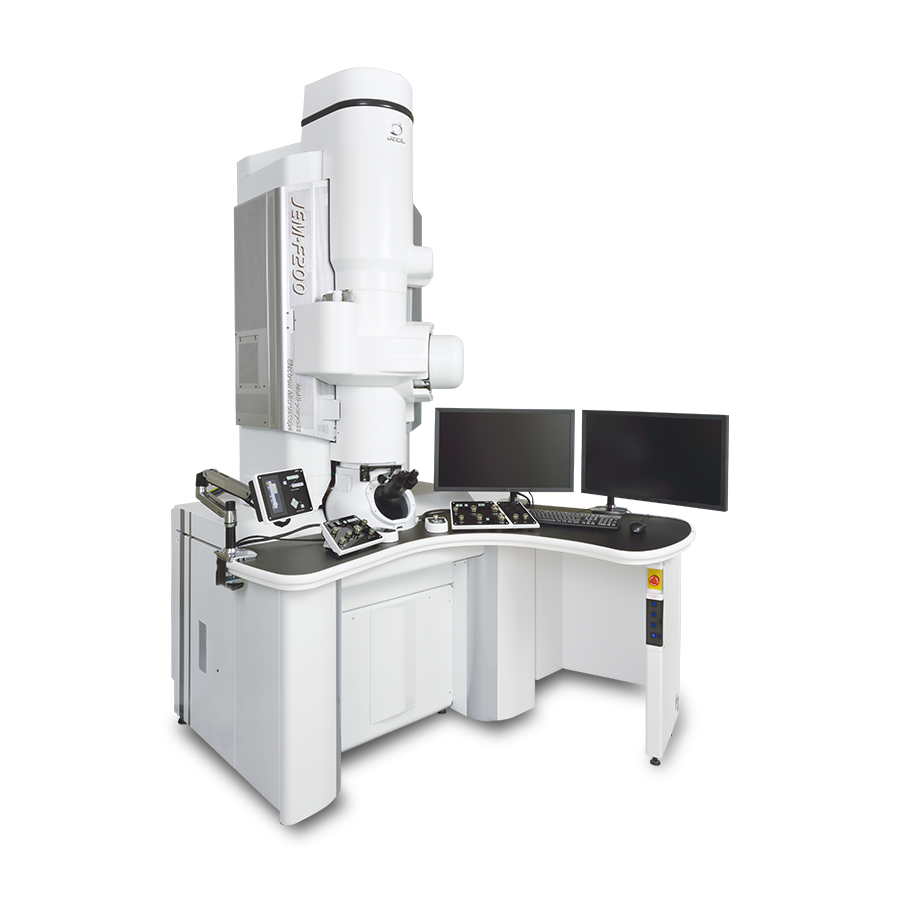

ANALYTICAL TEM. CRF. IIT KHARAGPUR
See further.
Understand more.
Analytical electron microscopy for exploring the structure and composition of materials.

FIND US
Room 004, Ground Floor
Nano-SATHI-CRF Building
Diamond Jubilee Complex
IIT Kharagpur
Technical Specs
- Instrument: JEOL JEM-F200 transmission electron microscope
- Electron source: Schottky field-emission gun
- Accelerating voltage: 20–200 kV model range; 80 and 200 kV are standard settings, with other voltages optional
- TEM lattice resolution at 200 kV: 0.1 nm
- TEM information limit at 200 kV: ≤ 0.12 nm with Schottky FEG
- HAADF-STEM resolution at 200 kV: 0.16 nm with Schottky FEG
- EDS: Single-window JEOL EDS
These are company-specified specs. REAL DATA LARGELY DEPENDS ON SAMPLE QUALITY
INSTRUCTIONS TO USERS FOR SAMPLES
- Dry samples overnight before bringing them for microscopy.
- Notify the facility in advance if a powder sample contains magnetic particles in the micron or sub-micron range. Magnetic particles can be drawn toward the objective pole piece, potentially causing permanent damage to the instrument for which the user will be responsible. For magnetic samples, we recommend SEM and XRD analysis first to establish particle size, followed by TEM only with appropriate caution.
- Samples that outgas or produce excessive carbon contamination will be removed from the column to protect the instrument vacuum. This requirement is non-negotiable.
- Do not expect atomic resolution comparable to the GRAND ARM at SATHI or the NeoARM at CRF. This instrument is intended primarily for analytical work.
- Sample insertion requires time to pump the load-lock chamber down to a vacuum equivalent to the column. Please allow the operator sufficient time and do not request that the exchange be rushed.
- Due to high demand, slots cannot be rescheduled.
Personnel and contact
OPERATOR
Anirban Kule
kuleanirban@gmail.com
Room 004, Ground Floor
Nano-SATHI-CRF Building, Diamond Jubilee Complex
IIT Kharagpur
FACILITATOR
Ahin Roy
ahin.iitkgp@gmail.com
225, Materials Science Centre
IIT Kharagpur
Ph: +91-3222-283988
FACILITY RESULTS